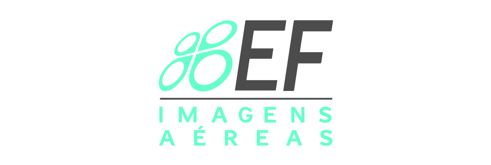
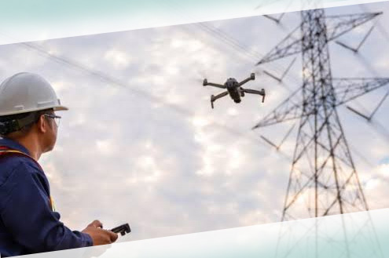

Utilize a tecnologia dos drones para obter uma visão detalhada de fachadas, telhados, coberturas e outras áreas de difícil acesso.
A captação de imagens em alta resolução permite registrar visualmente as condições da edificação, auxiliando profissionais e responsáveis pela manutenção na identificação de pontos que merecem maior atenção.
Realizamos a captura de imagens e vídeos em alta resolução de fachadas, telhados, coberturas, calhas e outras estruturas, fornecendo material visual que auxilia profissionais e responsáveis pela edificação na identificação e documentação de possíveis anomalias. Uma alternativa moderna para tornar a vistoria mais ágil, reduzir a necessidade de acessos em altura e obter registros detalhados de toda a edificação.
Registro detalhado de revestimentos, esquadrias, elementos externos e demais componentes visíveis da fachada.
Inspeção visual de telhas, coberturas, calhas, rufos e outros elementos que apresentam dificuldade de acesso.
Captura de imagens de torres, marquises, estruturas metálicas, áreas elevadas e outros pontos que necessitem de uma avaliação visual mais detalhada.
